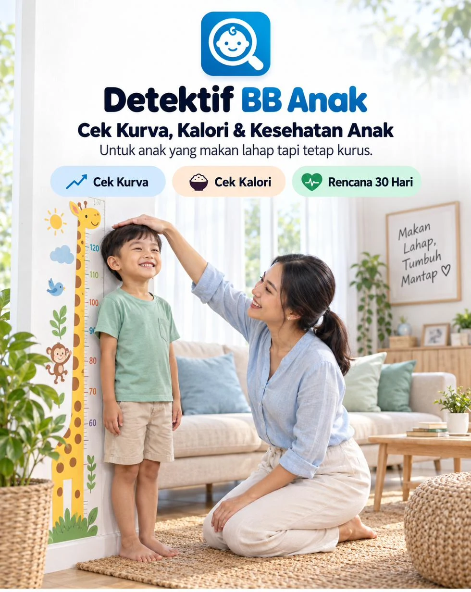
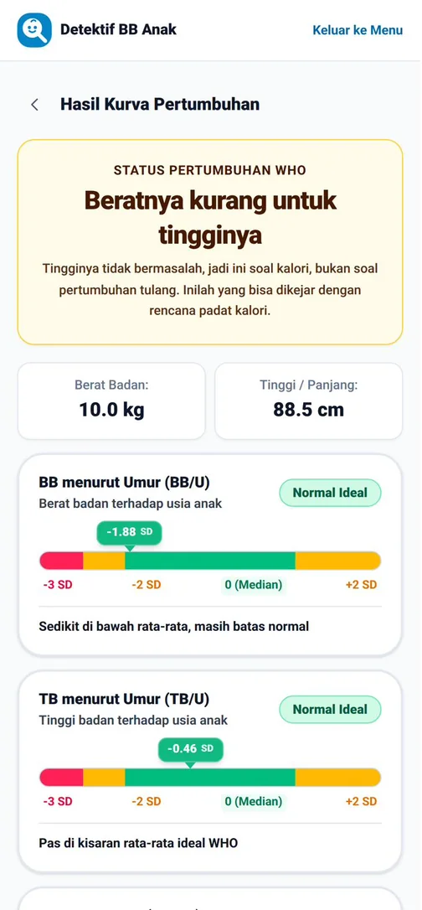
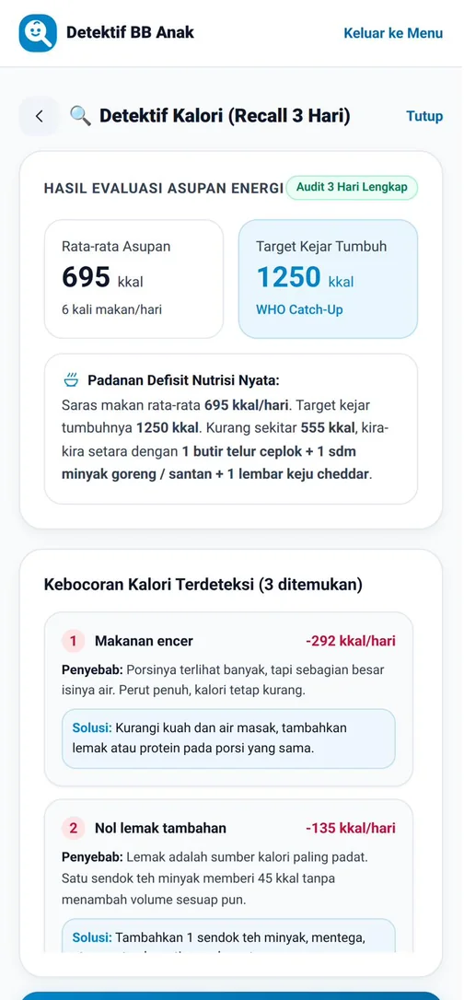
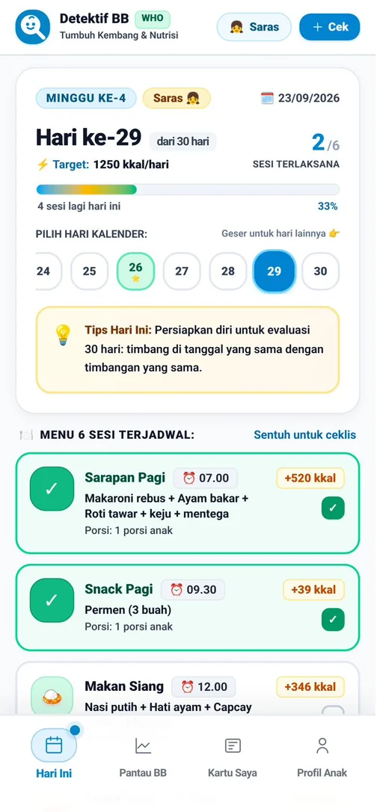
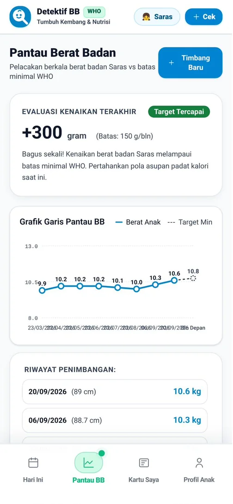
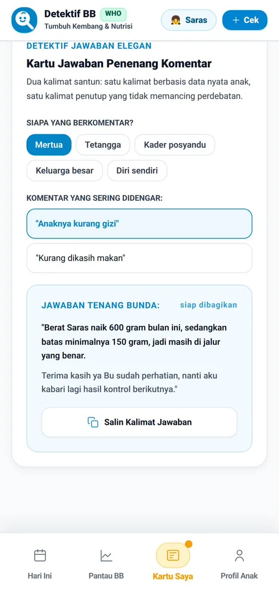
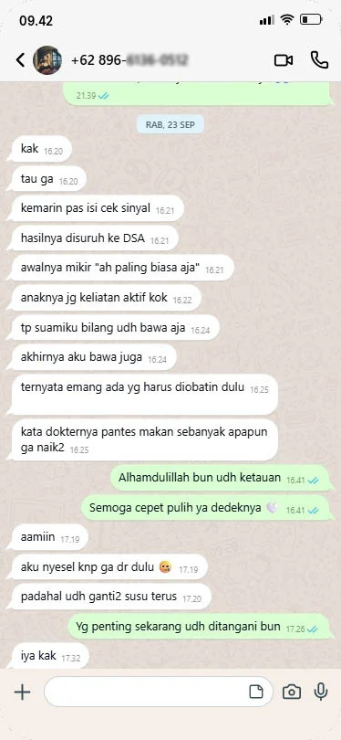
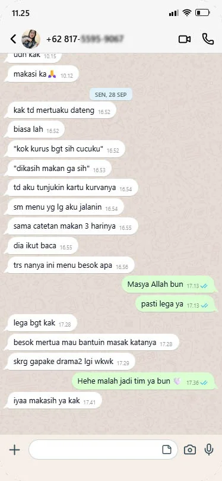
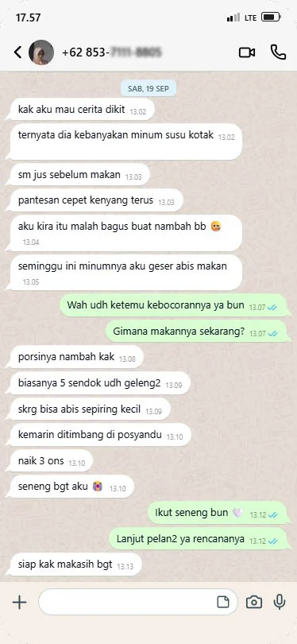

Detektif BB Anak adalah aplikasi di HP yang memeriksa kurva pertumbuhan, catatan makan, dan sinyal kesehatan anakmu, lalu menyusun rencana padat kalori 30 hari yang tinggal kamu jalankan.
Sekali bayar. Akses selamanya. Buka dari HP, tanpa install.
“Dikejar ya, Bu.”
Piringnya habis, kadang malah minta nambah. Tapi di posyandu, garis di KMS-nya datar lagi. Kader cuma bilang itu sambil lanjut ke anak berikutnya. Dikejar pakai apa? Dia sudah makan banyak.
“Kok kurus banget, gak dikasih makan?”
Kumpul keluarga, semua cucu dijejerin. Mertua ngelus lengan anakmu lalu ngomong begitu, pelan tapi semua dengar. Kamu senyum dan jawab “makannya banyak kok, Bu.” Sampai rumah, kalimat itu masih nempel.
“Coba susu yang ini, Bun.”
Sudah ganti susu penambah berat badan. Sudah beli vitamin penambah nafsu makan. Sudah baca belasan saran di grup. Padahal nafsu makannya gak pernah masalah. Timbangannya tetap segitu.
Tiga adegan ini kelihatan beda. Akarnya satu, dan bukan karena kamu kurang ngasih makan.
Anak kurus gak selalu kurang makan. Sering kali makannya banyak, tapi kalorinya hilang di tempat yang gak kelihatan. Susu yang diminum setengah jam sebelum makan. Kuah yang bikin kenyang duluan. Kerupuk yang ngisi perut tanpa ngisi kalori. Jarak makan yang terlalu rapat sampai dia gak pernah benar-benar lapar.
Dari luar semuanya kelihatan beres. Porsinya cukup, jadwalnya rutin. Kebocorannya baru kelihatan kalau makannya dicatat dan dihitung.
Ada satu hal lagi yang jarang dibahas: gak semua anak kecil itu kurus.
Beratnya kurang untuk tingginya. Ini soal kalori, dan ini yang bisa dikejar.
Tingginya kurang untuk usianya. Menambah porsi makan gak menjawab ini, dan ini perlu dievaluasi dokter anak.
Berat dan tingginya serasi. Badannya memang mungil, dan itu kabar baik.
Detektif BB Anak memeriksa anakmu berurutan, dari yang paling dasar sampai rencana harian.
Membaca posisi berat dan tinggi anakmu di kurva WHO.
Mengecek 15 tanda yang menunjukkan kapan perlu ke dokter anak dulu.
Menghitung makan 3 hari dan menemukan kebocorannya.
Menyusun menu 30 hari yang menaikkan kalori tanpa menambah suapan.
Membaca apakah rencananya bekerja, bulan demi bulan.
Sinyal sengaja diperiksa sebelum kalori. Kalau ada tanda yang perlu diperiksakan, kamu gak perlu menunggu 3 hari untuk tahu.
Berhenti nambah porsi. Mulai cari bocornya.
Tanpa paksa makan, tanpa drama di meja makan.
Ini yang kamu lihat di layar, dari hari pertama sampai bulan pertama.
Hari pertama, 2 menit
Isi berat dan tinggi, lalu keluar satu kalimat yang bisa kamu pahami. Kurus, pendek, atau memang mungil, lengkap dengan artinya buat anakmu. Dihitung pakai standar pertumbuhan WHO.

Hari ketiga
Catat makannya 3 hari pakai takaran rumah, tanpa timbangan dapur, tanpa foto, tanpa hitung gram. Aplikasi menghitung berapa kalori yang kurang dan di mana hilangnya. Misalnya susu sebelum makan yang diam-diam mengambil jatah makan siangnya. Tiap kebocoran lengkap dengan cara menambalnya.

Setiap pagi
Enam sesi makan, jamnya, dan targetnya, sudah menyesuaikan budget dan pantangan. Kalori naik, porsi tetap, jadi gak ada drama suap-suapan tambahan.

Akhir bulan
Timbang, catat, dan aplikasi membacanya dengan batas minimal sesuai usia anakmu. Kalau dua kali berturut-turut belum naik sesuai target, aplikasi bilang terus terang: waktunya kontrol ke dokter anak.

Saat ada yang komentar
Pilih siapa yang berkomentar, dan aplikasi menyusun dua kalimat jawaban berisi data anakmu sendiri. Tinggal salin.
“Berat Rafa naik 340 gram bulan ini, sedangkan batas minimalnya 150 gram, jadi masih di jalur yang benar. Terima kasih ya Bu sudah perhatian.”

Di dalamnya masih ada Detektif Sinyal untuk tahu kapan perlu ke dokter, Simulator What-If, Rapor Bulanan yang siap dibawa saat kontrol, dan profil untuk lebih dari satu anak.
Satu sendok teh minyak, mentega, atau santan di tiap makan utama. Susu dan minuman manis pindah ke setelah makan.
Satu butir telur per hari. Satu snack pengganjal diganti roti keju atau pisang selai kacang.
Protein hewani kedua di makan siang atau malam. Sayur dimasak bersantan atau ditumis.
Snack padat di sore hari, seperti puding susu, smoothie pisang, atau bubur kacang hijau.
Kenaikannya bertahap, maksimal 20% per minggu. Tujuannya satu: kalori masuk tanpa perang di meja makan.
Tiap anak punya ritmenya sendiri. Yang menentukan bukan seberapa banyak kamu menyuapi, tapi seberapa konsisten kebocorannya ditambal.
| Ebook / artikel | Tanya di grup | Detektif BB Anak | |
|---|---|---|---|
| Tahu kurus, pendek, atau mungil | Baca tabel sendiri | Tergantung yang jawab | Dihitung otomatis, standar WHO |
| Kalori harian anakmu | Hitung manual | Tidak ada | Dari catatan 3 hari |
| Kalorinya bocor di mana | Teori umum | Tebakan | 5 kebocoran teratas anakmu |
| Besok pagi masak apa | Contoh menu umum | Resep acak | Menu 6 sesi sesuai budget dan pantangan |
| Rencananya jalan atau tidak | Pakai perasaan | Pakai perasaan | Pantau BB dengan batas minimal |
| Kapan harus ke dokter | Dibahas sekilas | Beda-beda jawabannya | Sinyal dan alarm otomatis |
| Menjawab komentar keluarga | Tidak ada | Tidak ada | Kartu Jawaban berisi data anakmu |
| Menyebut nama anakmu | Tidak | Tidak | Di setiap hasil |
Geser untuk melihat cerita lainnya.



Rp127.000 untuk 180 sesi makan.30 hari dikali 6 sesi, hitungannya sekitar Rp700 per sesi makan yang gak perlu kamu tebak lagi. Menunya mungkin nanti kamu hafal sendiri, tapi cara menambal kebocorannya kamu pakai sampai dia besar.
Panduan Akses berisi kode dikirim ke email yang kamu pakai saat order.
Rp127.000 adalah harga perkenalan batch awal. Harga akan naik seiring penambahan fitur.
Bisa pakai QRIS, transfer bank, atau e-wallet.
Begitu pembayaran terkonfirmasi, kamu diarahkan ke halaman sukses, dan Panduan Akses (PDF) berisi kode akses dikirim ke emailmu. Kalau belum muncul di kotak masuk, cek folder Spam atau Promosi.
Buka aplikasinya, tempel kode dari PDF, kenalkan anakmu, dan pemeriksaan pertama langsung jalan.
Tanpa bikin akun, tanpa password.
Di hari itu, kamu gak perlu jelasin apa-apa ke siapa pun. Angkanya yang bicara.
Kamu sudah nambah porsi. Sudah ganti susu. Sudah coba vitamin. Bukan karena kamu kurang berusaha. Selama ini yang ditambah porsinya, padahal yang bocor kalorinya.
Jam makan berikutnya tinggal beberapa jam lagi.
Sekali bayar. Akses selamanya. Buka dari HP, tanpa install.